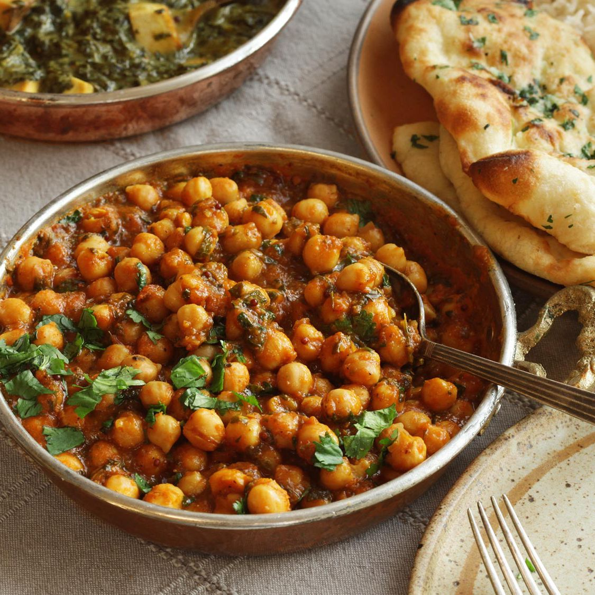

Chana Masala

Savory Indian chickpeas served over rice
Ingredients needed
- 1 Onion, chopped
- 1 Tomato, chopped
- 1 (one inch) piece of fresh ginger, peeled and chopped
- 4 cloves of garlic
- 1 green chili pepper, seededn and chopped
- 3 tablespoons of olive oil
- 2 bay leaves
- 1 tsp. each of chili powder, coriander powder and garam masala
- 1/2 tsp. of turmeric powder
- a pinch of salt
- water (as needed)
- 1 (15 oz.) can of chickpeas
- Fresh cilantro leaves (for garnish)
Cooking instructions
- Grind the onion, tomato, ginger, garlic, and chile pepper together
in a food processor until it forms a paste
- Heat the olive oil in a skillet over medium heat. Fy bay leaves in
hot oil until the oil begins to separate and the mixture is golden
brown (2-3 mins.) Season the mixture with the spices and salt.
- Stir enough water into the mixture to get a thick gravy; bring to a
boil and stir chickpeas into the gravy. Reduce to medium heat and
cook until the chickpeas are heated through (5-7 mins.) Garnish
with cilantro.